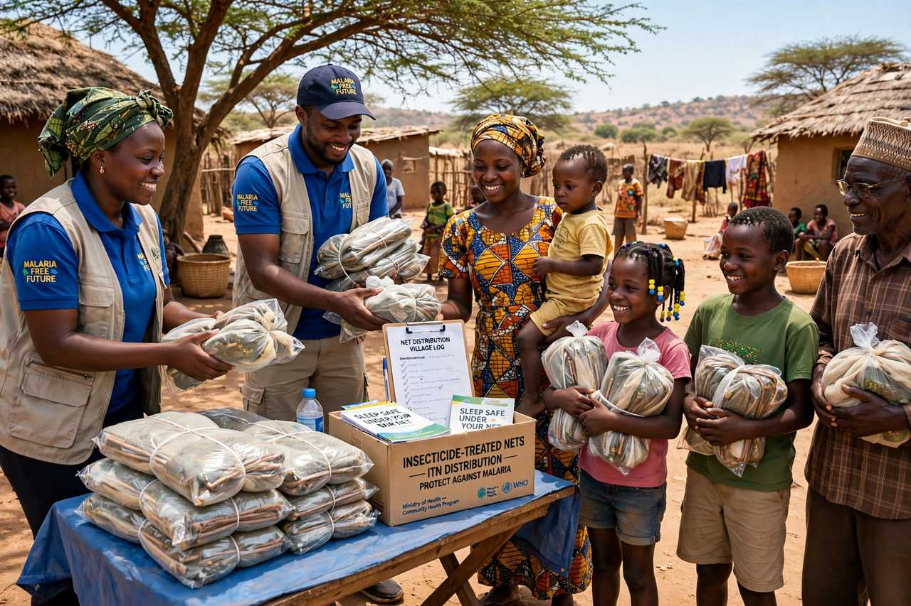

From Wikipedia, the free encyclopedia
| Effective altruism | |
|---|---|
| Type | Philosophical movement and social movement |
| Core idea | Use evidence and reason to do the most good possible, and act on it |
| Key figures | Peter Singer, Toby Ord, William MacAskill |
| Key organisations | GiveWell, Giving What We Can (2009), 80,000 Hours, Open Philanthropy |
| Focus areas | Global health and poverty, animal welfare, global catastrophic and existential risks, longtermism |

Effective altruism (EA) is a philosophical and social movement that seeks to use evidence and careful reasoning to determine how to benefit others as much as possible, and to act on those findings. Combining the moral claim that helping others matters enormously with an empirical, cause-prioritising approach borrowed partly from economics and decision theory, it has directed billions of dollars of donations and thousands of careers toward what its research judges to be the highest-impact causes — chiefly global health and development, animal welfare, and the reduction of global catastrophic and existential risks.
The movement grew from the moral philosophy of Peter Singer — from his 1972 essay "Famine, Affluence, and Morality", with its famous drowning-child analogy, through The Life You Can Save (2009) — and crystallised around 2009–2011, when Toby Ord and William MacAskill founded Giving What We Can (whose members pledge at least 10% of their income to effective charities), the charity evaluator GiveWell gained influence, and the career-advice organisation 80,000 Hours was founded at Oxford. MacAskill's Doing Good Better (2015) became the movement's popular manifesto; the term "effective altruism" itself was adopted around 2011–2012 as the community named itself.
Signature ideas include cause prioritisation (comparing causes by scale, neglectedness and tractability), impartiality (a life counts the same wherever it is), "earning to give", expected-value reasoning about low-probability, high-stakes outcomes, and counterfactual impact (what happens because of you that would not otherwise have happened). Top-rated interventions have included insecticide-treated bed nets against malaria (the Against Malaria Foundation) and deworming. The movement's long-termist wing, drawing on Ord's The Precipice (2020) and MacAskill's What We Owe the Future (2022), argues that safeguarding humanity's long-run future — especially against risks from advanced AI and engineered pandemics — may be among the most important work of our time (see Longtermism).
Critics argue that EA's metrics miss systemic and political change, that its cause areas reflect the intuitions of a narrow donor class, that expected-value calculations for existential risks are unreliable, and that the movement's proximity to tech wealth created blind spots — a criticism sharpened when the FTX collapse of 2022 destroyed a major funder (Sam Bankman-Fried had been a prominent EA-aligned donor) and funds associated with the movement faced scrutiny. Defenders reply that EA is a question, not a fixed set of answers, that its institutions (GiveWell's research, for instance) predate and survived the scandal, and that its core practices — comparing impact honestly and following through — remain sound.
Longtermism · Utilitarianism · Consequentialism · Philosophy · Transhumanism